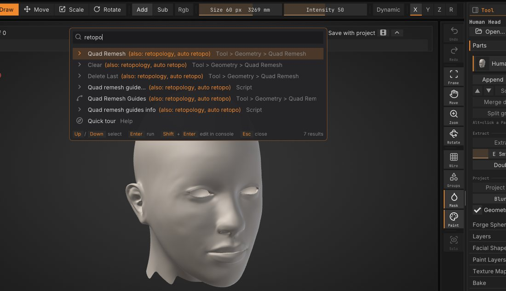
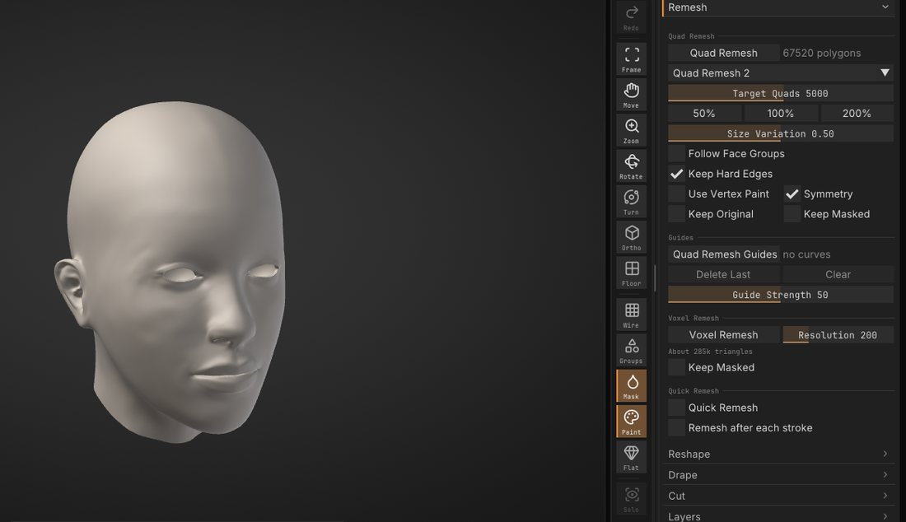
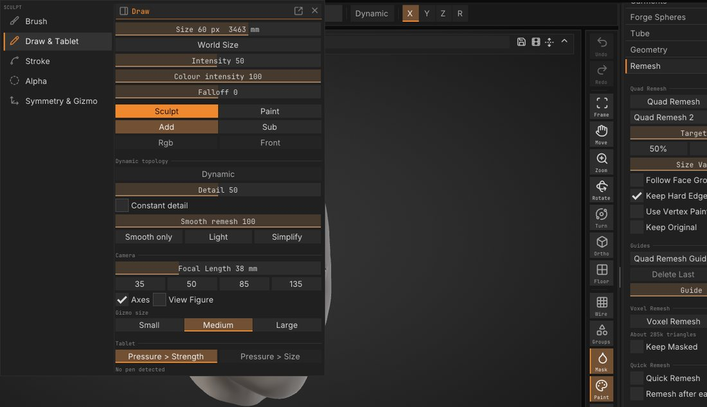
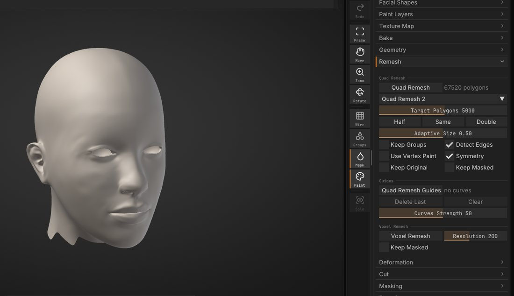
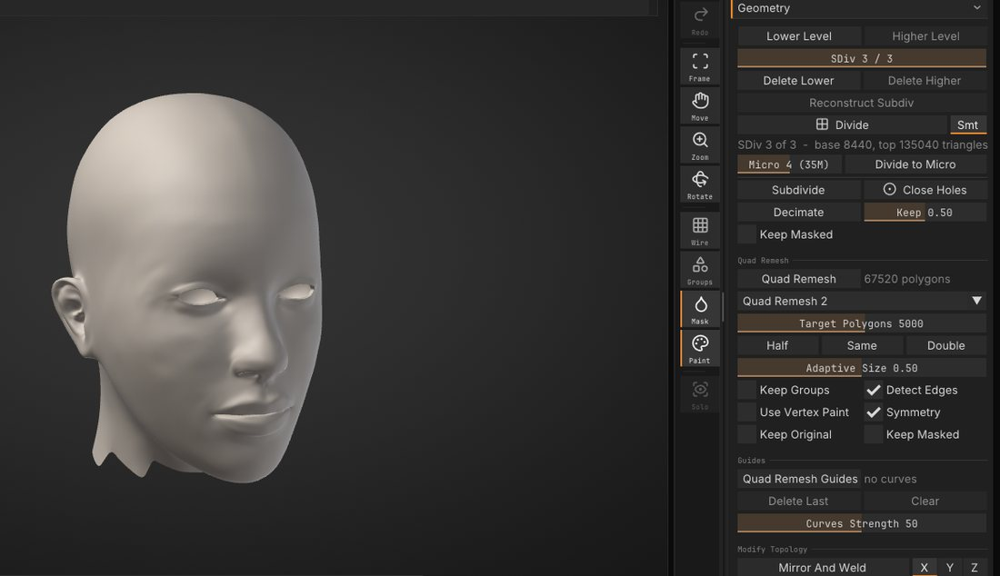
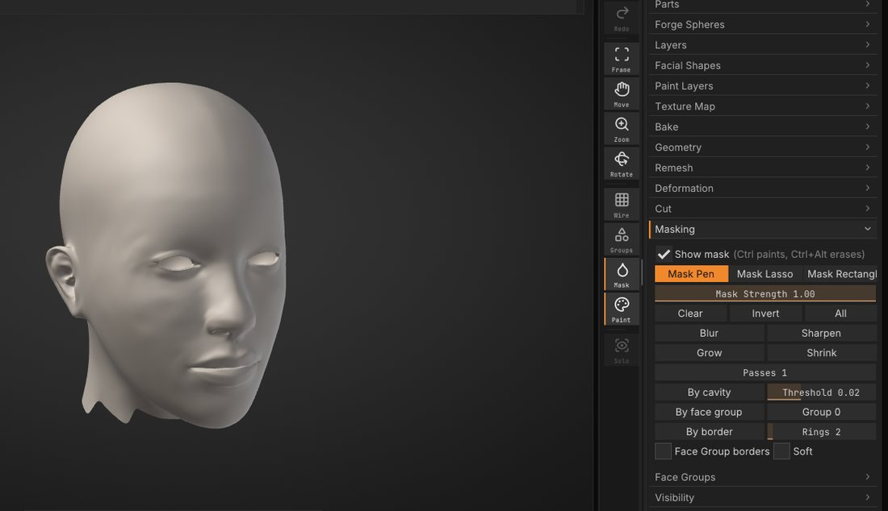
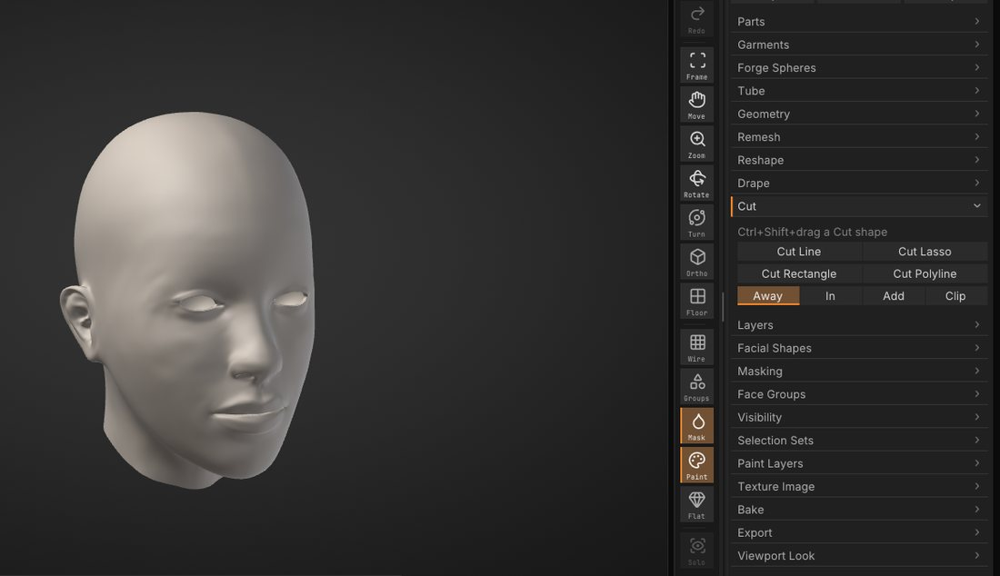
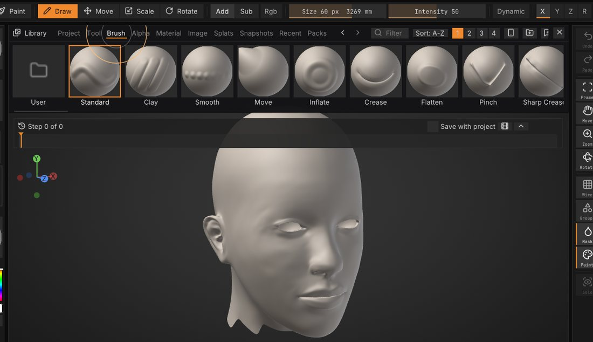
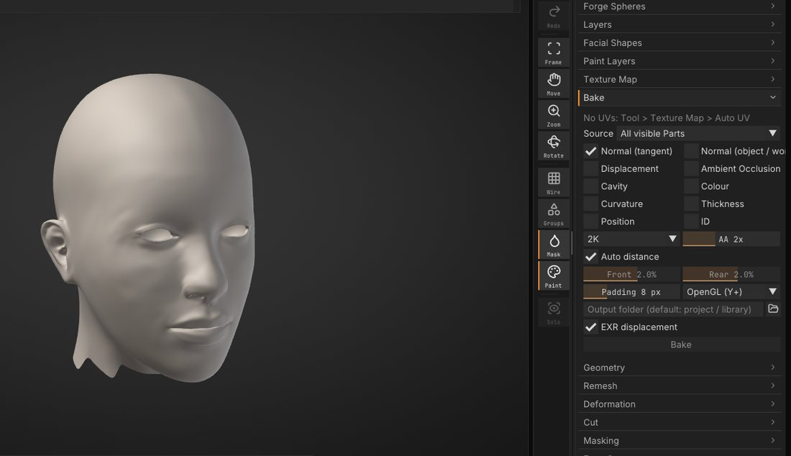

Quick tour for experienced sculptors
You know how to sculpt; you just need to know where SculptForge keeps things. This chapter is the same ten stops as the in-app tour: Help > Quick tour, or Quick tour in the welcome. Each slide there has a Show me button that opens the panel it talks about and flashes it, while the tour waits in a small bar at the bottom of the view (Back to the tour brings it back).
The pictures are SculptForge in its default look and layout.
The interface is also in Spanish, Traditional Chinese and Simplified Chinese: the welcome's Language row (or Edit > Preferences > Interface > Language) switches it at once.
Where things are#


The menus along the top are sorted by task: Sculpt (brushes, strokes, alphas, symmetry), Paint, Mesh, View and Render. The right tray holds the Tool palette: Parts, Geometry, Remesh, Masking, Cut, Bake and more. The shelves around the view hold the brush, its size and strength, and the brush, stroke, alpha and material tiles. See The interface.
Lost? Press F3 and type what you are after in your own words. The search knows the usual sculpting words too, and says which one it matched:
| Type | Finds |
|---|---|
remesh, voxel, block out | Voxel Remesh |
retopo, retopology, quads | Quad Remesh |
subdivide, multires, levels | Add Level, Lower Level, Higher Level |
groups | Face Groups |
clip, trim, slice | Tool > Cut |
folders, objects | Tool > Parts |
insert, kitbash | Append (a mesh as a new Part) |
vertex color | Vertex Paint |
armature | Forge Spheres |
Voxel Remesh#


A fast remesh for blocking out. Pull shapes far out or merge pieces, then rebuild one even surface: open Tool > Remesh in the right tray, set Resolution and click Voxel Remesh. A higher resolution keeps more detail. The mask and vertex paint carry over, so you can keep going. See Geometry.
Dynamic topology#


Dynamic topology adds detail where you sculpt. Turn on Dynamic on the top shelf and the brush adds triangles where it needs them and removes them where it doesn't; Detail sets how small they get. Pull horns, ears or fingers out of a ball without remeshing. Wire (Shift+F) shows the new triangles. See Dynamic topology.
Quad Remesh#


Automatic quad retopology: Tool > Remesh > Quad Remesh rebuilds a sculpt as clean quads whose edge loops follow the forms. Set Target Quads and leave Keep Original on. Add levels to the result, then Project Detail (Tool > Parts) brings the detail back. Draw Quad Remesh Guides to steer the loops. See Quad retopology.
Levels, Parts and Face Groups#


Ctrl+D divides and keeps the lower levels: Shift+D steps down, D steps up, and you can sculpt at any level (Tool > Geometry). A scene holds several Parts (Tool > Parts); Alt+click one in the view to work on it. Face Groups split a Part into coloured regions to hide, isolate or mask (Tool > Face Groups). See Subdivision levels.
Masking#


Hold Ctrl and paint to mask, Ctrl+Alt to unmask. Tool > Masking inverts, blurs and grows the mask, and builds one By cavity, By face group or along the border. Press G for the stroke popup: its Shapes row picks Mask Pen, Lasso Mask or Rectangle Mask for the next Ctrl stroke. See Masking.
Cut, Clip and Fill Holes#


Pick a shape in Tool > Cut and draw it with Ctrl+Shift: a line, lasso, rectangle or polyline goes straight through the whole Part, and a closed Part stays closed. Cut it away, cut in, add, or Clip: press everything outside the shape flat onto its outline. Fill Holes (Tool > Geometry) caps every open boundary. See Cut and Fill Holes.
Brushes, alphas and the Library#


B opens the brush picker; type the first letters of a name to pick one. The Alpha tile picks the stamp shape. The Library (,) holds starter meshes, brushes, alphas, Lit Spheres and snapshots. A pack (.sfpack) brings brushes, alphas and Lit Spheres in one file; File > Install Pack shows what is inside before anything is installed. See Sculpting and brushes and Packs and macros.
Baking and texturing#


Tool > Bake makes normal, displacement, ambient occlusion, cavity and colour maps from your sculpt onto a low-poly Part with UVs, in the background. P picks the Paint brush for vertex paint; New Texture on the top shelf paints into a texture instead (Auto UV runs first), with paint layers and material channels. See Baking, Texture painting and Material painting.
SculptForge stays free#
Everything in this tour is free, and stays free. If SculptForge helps your work, a membership keeps it moving: members get betas and early builds, vote on what we build next and ask for the brushes and alphas they want. See sculptforge.app/support.html. Maybe later on the tour's last slide closes it, and it doesn't come back by itself.
Keys#
Edit > Preferences > Input > Style picks the keys: SculptForge (the default), Classic sculpting keys, Blender or Maya. Picking the Classic sculpting keys offers this tour once. See Keyboard and mouse.